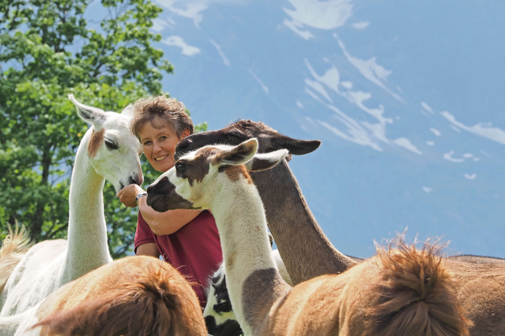
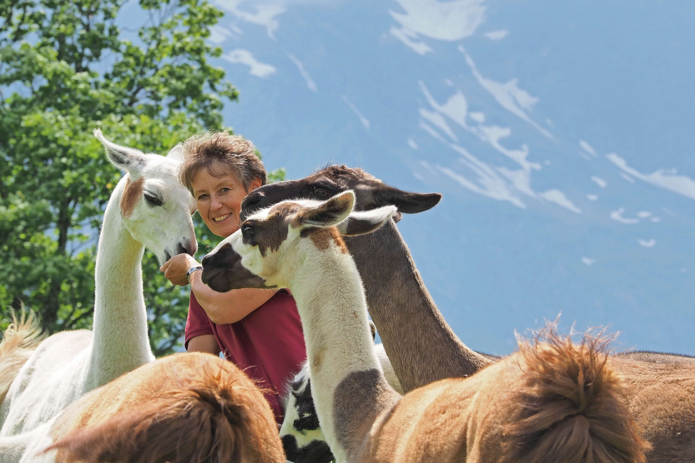
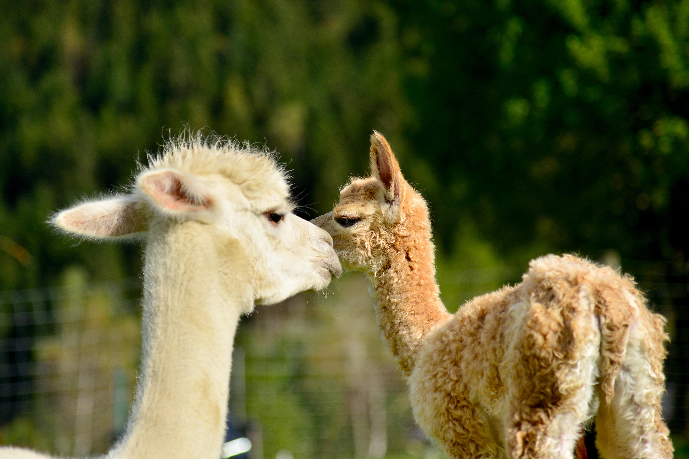
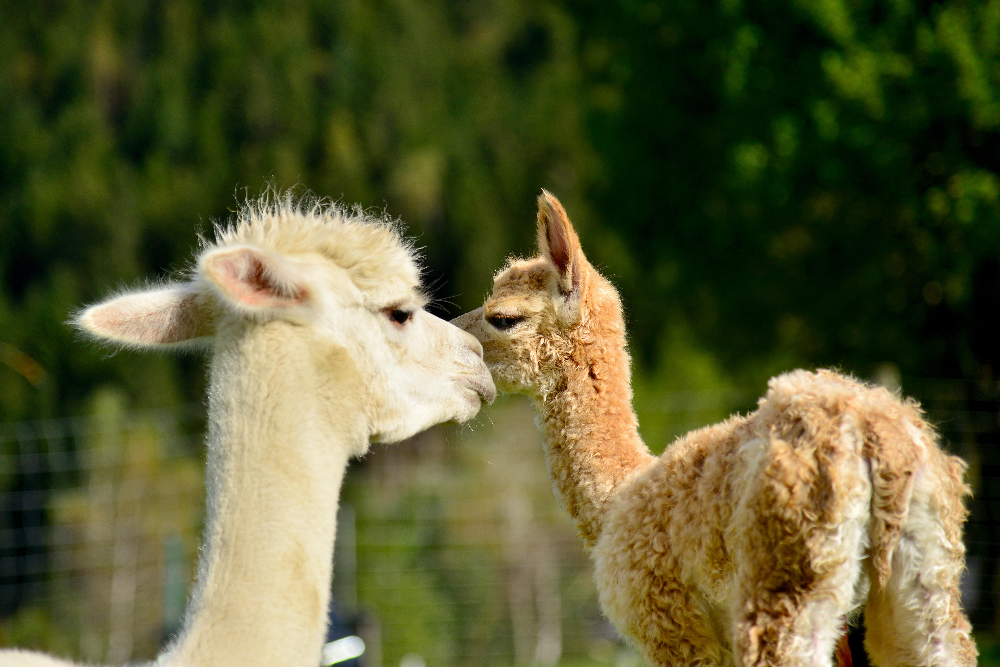

Einfach SEIN und einfach ZEIT zum SEIN
Lerne unsere Tiere kennen
Unsere Mulis
Warum hält man sich eine Mischung aus Esel und Pferd? Ganz
einfach, weil Mulis (Maultiere) als Tragtiere im Gebirge
unschlagbar sind – passender Körperbau (nicht zu groß und
nicht zu massig), sehr trittsicher, äußerst widerstandsfähig
und außerdem sehr genügsam.
Genau aus diesen Gründen haben wir unser erstes Muli Noce,
eine Maultierstute, die mich, Wolfgang, bei meiner Arbeit als
Hirte mehrere Sommer auf einer Alm unterstützt. Seit wir hier
in WErschling sind, bildet Pepe, ein Muli-Wallach, mit Noce
gemeinsam die „kleine Herde“.
Wir integrieren die beiden Tiere bei unserer Arbeit am Hof –
Holzrücken im Wald, Brennholz- und Heutransport und beim
Wiesen bearbeiten. Weiters bieten wir Tragedienst in der
näheren Umgebung für Bauern etc. an.
Im täglichen Training und der gemeinsamen Arbeit mit den
Beiden entsteht eine sehr intensive Beziehung.
.JPG)
Unsere kleine Imkerei
Was liegt näher, wenn man naturverbunden und gesund zu leben
versucht, als Bienen zu haben. So begleiten uns eigene
Bienen schon einige Jahrzehnte. Durch die Arbeit mit den
Bienen wuchs und wächst unser Verständnis für Zusammenhänge
und Abläufe in der Natur immer mehr sowie die Erkenntnis,
wie sehr die Jahreszeit, die Temperatur, der Niederschlag
uvm. den Erfolg mitbestimmen.
Die Bienen liefern uns nicht nur gesunden Honig, sondern
tragen einen wichtigen Teil zur Bestäubung, z. B.:
Obstbäume, in der Umgebung bei. Es ist faszinierend zu
erkennen, wie ein Bienenvolk funktioniert – es arbeitet als
Kollektiv und kann uns Menschen als großes Vorbild dienen.
„Wenn die Bienen verschwinden, hat der Mensch nur noch vier
Jahre zu leben; keine Bienen mehr, keine Pflanzen, keine
Tiere, keine Menschen mehr.“ (Albert Einstein)
Unsere Lamas
Jeder kennt Alpakas, die kleinen Geschwister der Lamas.
Gemeinsam zählen sie zur Familie der Kamele und diese Tiere
begleiten uns nun schon viele Jahre. 8 Tiere, 4 Weiberl und 4
Manderl bilden die Herde, die dem Hof einen ganz wesentlichen
Charakter gibt.
Wozu Streß bei der Arbeit, im Leben, im Miteinander? Lamas
zeigen uns durch ihre Ruhe wie sehr wir uns täglich sortieren
sollten, Inhalte reduzieren und Unwichtiges sein lassen
könnten. Jährlich im Frühjahr gewinnen wir mit großer Freude
die Wolle der Tiere, von der wir verschiedene Natur-Produkte
(siehe Produkte) anfertigen lassen. Dabei steht Qualität vor
Quantität. Die langjährige Erfahrung, wie gut uns diese Tiere
tun, machen wir für Menschen gerne zugänglich. Dafür gibt es
unsere Angebote, bei denen Du gemeinsam mit den Tieren die
eigene Lebensgeschwindigkeit reduzieren, „runter kommen“ vom
hektischen Alltag und wieder Ruhe fühlen kannst.
Sie helfen Dir auf vielfältige Weise beim Abschalten, Besinnen
und Dich selber stärken. Wir sind dankbar, diese wertvollen
Wesen bei uns am Hof zu haben!
 

Katzen
Was gibt es denn von Katzen Besonderes zu erzählen? Genau
das, nämlich daß sie „besonders“ sind. Sie sind Meister der
Meditation und leben uns die völlige Entspannung vor, ohne
dabei ihre Wachsamkeit zu vernachlässigen. Grundsätzlich
sind sie Einzelgänger, und trotzdem ist alles möglich. So
hat unser Senior „Jacky“, trotz Eigensinn und Alter die
junge neue Katzenlady „Lilly“ mittlerweile nicht nur
akzeptiert, sondern die beiden arbeiten im Team für
gemeinsame Interessen. Wir beobachten und lernen mit ihnen,
wie sehr es gelingen kann, die Balance zwischen Notwendigem
und Unwichtigem zu finden, durch klare, gelebte
Strukturen.
„Freiheit bedeutet, dass man nicht unbedingt alles so machen
muss wie andere Menschen. Und dann muss man ja auch noch
Zeit haben, einfach da zu sitzen und vor sich hin zu
schauen.“ (Astrid Lindgren)
.jpg)